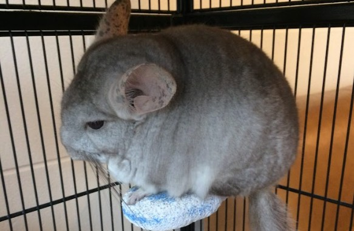
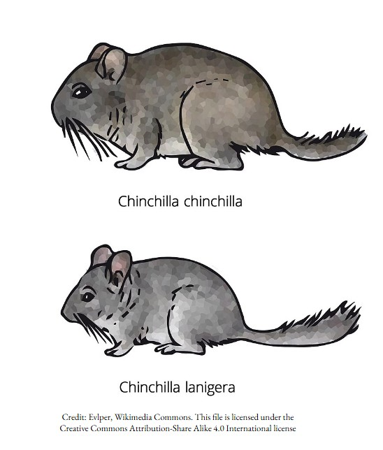

The Chinchilla Lanigera, or more informally known as the "Long tailed chinchilla", is the most common species of Chinchilla and is commonly found in captiviy of a breeder, or safely nurtured in a household environment. Despite this, the majority of both genuses are mostly held in captivity.
Chinchilla Lanigeras are considered to be the more "domesticated" genus of chinchilla.

There isn't really all that much that seperates the Chinchilla Lanigera from the Chinchilla Chinchilla, with the main difference simply being the tail length, with Chinchilla Lanigeras tending to have longer tails than their cousins. Another difference would be that Chinchilla Lanigeras actually usually tend to be smaller than Chinchilla Chinchillas, as well as having differing body shapes, which is displayed in the diagram.